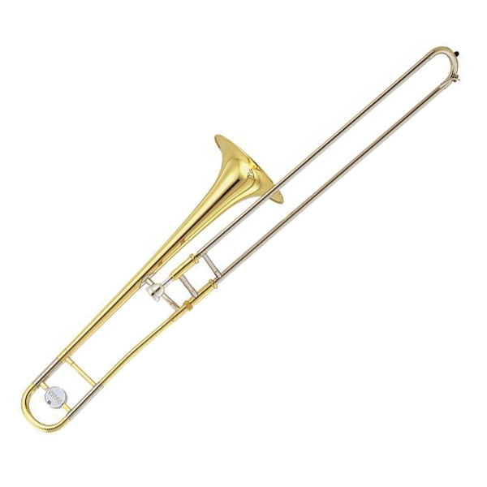

- Description
The YSL-354 is a student grade Tenor trombone that is designed for beginner students to sound good, and as quickly as they can, instilling confidence into the student to play centre stage when called upon. The standard student models are durable, for the untrained hand to easily play without spoiling it, and of high quality, produced by Yamaha's own craftspeople with similar specifications as their performance models. Every single instrument is tested and inspected by experts and performers, to make sure they are 1) Easier for beginners to play without losing out on quality and 2) Able to be used in performances without hindering the pieces played.
- Specifications
Name: Yamaha YSL-354 Key: Bb / E Finishing: Silver-plated Bell Size: 8 in Bore Size: 0.5 in Mouthpiece: SL-48S Pricing: RM200 per month - Pricing Explanation
Being both usable in practice and performances, the pricing of the YSL-354 tenor trombone is not as expensive as a pure performance only model, but more expensive than a student only model. For a bargain of RM200 a month, a student or performer can rent the tenor trombone for performances, exams or just practice if one may so wish. The base price of it is RM3200 for a brand new trombone, with shipping not included, hence renting it for a few months beat buying it straight up.
- Disclaimer
When in possession of the instrument, the user holds full responsibility for what happens to the instrument. If the instrument rented is in anyway damaged, the customer will have to replace said instrument for the rental service. Late returners of the instrument would be issued a warning in a week, and will be subjegated to a RM150 late fee. For every subsequent week, another RM150 would be added.